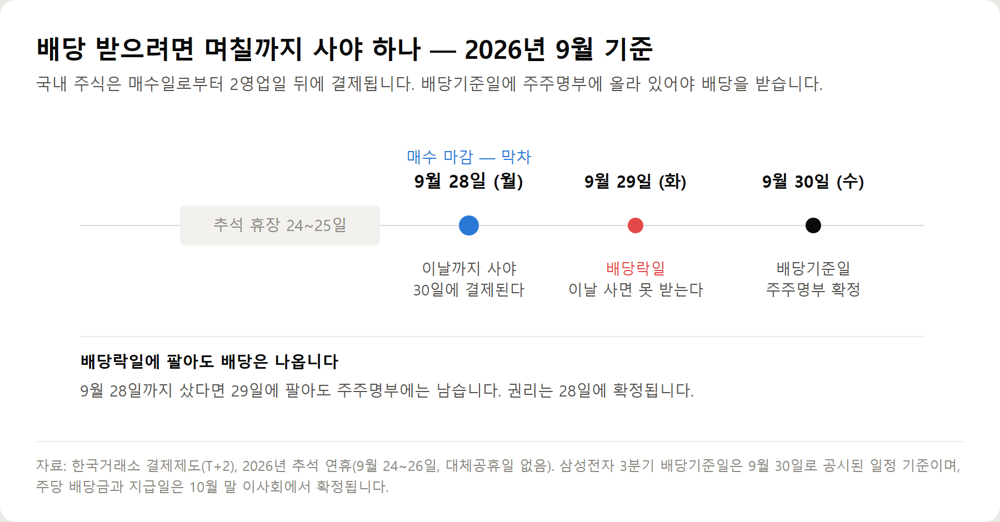

<meta charset="utf-8">
<title>배당기준일·배당락 계산법 요약 — 나의 투자 그리고 행복한 여행</title>
<meta name="description" content="배당기준일과 배당락일 계산법을 자본시장법·국세청 기준으로 정리했습니다. 2영업일 전 매수, 원천징수 15.4%, 금융소득종합과세 2000만원.">
<meta name="viewport" content="width=device-width, initial-scale=1">
<link rel="canonical" href="https://worldtraveler1.tistory.com/109">
<link rel="preconnect" href="https://fonts.googleapis.com">
<link rel="preconnect" href="https://fonts.gstatic.com" crossorigin>
<link rel="stylesheet" href="https://fonts.googleapis.com/css2?family=Hahmlet:wght@400;600;800&family=IBM+Plex+Mono:wght@400;500&family=IBM+Plex+Sans+KR:wght@300;400;500;600&display=swap">

<style>
  :root{
    --paper:#F2EEE6;--surface:#FAF8F3;--surface-2:#E7E1D5;
    --ink:#191510;--ink-2:#4A4235;--ink-3:#7D7364;
    --line:#D6CEBF;--line-soft:#E4DDD0;--accent:#B06A15;--accent-bright:#C2761A;
    --up:#E5484D;--down:#3B82F6;
    --f-display:"Hahmlet",'Nanum Myeongjo',"Apple SD Gothic Neo",serif;
    --f-body:"IBM Plex Sans KR","Apple SD Gothic Neo","Malgun Gothic",sans-serif;
    --f-mono:"IBM Plex Mono","SFMono-Regular",Consolas,monospace;
    --pad:clamp(20px,5vw,64px);
  }
  @media (prefers-color-scheme:dark){
    :root:not([data-theme="light"]){
      --paper:#0B1120;--surface:#121A2C;--surface-2:#1A2439;
      --ink:#E9EEF7;--ink-2:#A9B5C9;--ink-3:#72809A;
      --line:#26314A;--line-soft:#1D2739;--accent:#E8A33D;--accent-bright:#F0B45C;
    }
  }
  *{box-sizing:border-box;}
  body{margin:0;background:var(--paper);color:var(--ink);font-family:var(--f-body);
    font-weight:300;font-size:1rem;line-height:1.75;-webkit-font-smoothing:antialiased;}
  a{color:inherit;}
  img{max-width:100%;height:auto;}
  .wrap{max-width:760px;margin:0 auto;padding-inline:var(--pad);}
  .nav{position:sticky;top:0;z-index:20;background:color-mix(in srgb,var(--paper) 88%,transparent);
    backdrop-filter:saturate(180%) blur(12px);border-bottom:1px solid var(--line);}
  .nav-in{display:flex;align-items:center;justify-content:space-between;height:58px;}
  .brand{font-family:var(--f-display);font-weight:600;font-size:1rem;letter-spacing:-.02em;text-decoration:none;}
  .back{font-family:var(--f-mono);font-size:.72rem;color:var(--ink-3);text-decoration:none;}
  .article{padding-block:clamp(40px,7vw,72px) clamp(56px,9vw,96px);}
  .eyebrow{font-family:var(--f-mono);font-size:.68rem;letter-spacing:.16em;text-transform:uppercase;
    color:var(--accent);margin:0 0 14px;}
  h1{font-family:var(--f-display);font-weight:800;font-size:clamp(1.6rem,4.4vw,2.3rem);
    line-height:1.3;letter-spacing:-.03em;margin:0 0 16px;}
  .byline{font-family:var(--f-mono);font-size:.72rem;color:var(--ink-3);
    padding-bottom:24px;border-bottom:1px solid var(--line);margin-bottom:32px;}
  h2{font-family:var(--f-display);font-weight:600;font-size:1.25rem;letter-spacing:-.02em;margin:42px 0 14px;}
  h3{font-family:var(--f-display);font-weight:600;font-size:1.05rem;letter-spacing:-.02em;
    margin:30px 0 10px;padding-top:14px;border-top:1px solid var(--line-soft);}
  h3 .code{font-family:var(--f-mono);font-size:.7rem;font-weight:400;color:var(--ink-3);margin-left:6px;}
  p{margin:0 0 18px;color:var(--ink-2);}
  ul.checks{margin:0 0 18px;padding-left:20px;color:var(--ink-2);}
  ul.checks li{margin-bottom:8px;font-size:.94rem;}
  table{width:100%;border-collapse:collapse;font-size:.88rem;margin-bottom:8px;}
  th{font-family:var(--f-mono);font-size:.66rem;letter-spacing:.06em;text-transform:uppercase;
    color:var(--ink-3);text-align:right;padding:8px 6px;border-bottom:1px solid var(--line);}
  th:first-child{text-align:left;}
  td{padding:10px 6px;border-bottom:1px solid var(--line-soft);color:var(--ink-2);}
  td.num{font-family:var(--f-mono);text-align:right;font-variant-numeric:tabular-nums;}
  td.up{color:var(--up);} td.down{color:var(--down);}
  .scroll{overflow-x:auto;}
  figure{margin:22px 0;}
  figure img{display:block;border-radius:3px;background:var(--surface-2);}
  figcaption{margin-top:8px;font-family:var(--f-mono);font-size:.68rem;color:var(--ink-3);text-align:center;}
  .note{margin-top:34px;padding:16px 18px;border-left:3px solid var(--accent);
    background:var(--surface);border-radius:0 3px 3px 0;}
  .note p{margin:0;font-size:.85rem;color:var(--ink-3);}
  .foot{border-top:1px solid var(--line);background:var(--surface);padding-block:30px 38px;}
  .foot p{margin:0;font-size:.8rem;color:var(--ink-3);}
</style>

<nav class="nav">
  <div class="wrap nav-in">
    <a class="brand" href="../index.html">나의 투자 그리고 행복한 여행</a>
    <a class="back" href="../index.html#stocks">← 시황으로</a>
  </div>
</nav>

<main class="wrap article">
  <p class="eyebrow">Market</p>
  <h1>배당기준일·배당락 계산법 요약</h1>
  <p class="byline">투자 · 2026-09-22 기준</p>

  <p>한 줄 요약: 배당기준일 2영업일 전까지 사야 하고, 배당락일에 팔아도 배당은 나옵니다.</p>
  <p>2026년 9월 22일에 자본시장법·국세청·자본시장연구원 자료로 정리한 기록입니다.</p>
  <h2>핵심 숫자</h2>
  <ul class="checks">
    <li>매수 마감 — 배당기준일 2영업일 전 (T+2 결제)</li>
    <li>배당락일 — 배당기준일 1영업일 전. 이날 사면 배당을 못 받는다</li>
    <li>배당락일에 팔아도 배당은 나온다 — 권리는 매수 시점에 확정</li>
    <li>배당소득 원천징수 15.4% (소득세 14% + 지방소득세 1.4%)</li>
    <li>이자·배당 합산 연 2,000만원 초과 시 금융소득종합과세</li>
    <li>분기배당 — 분기말부터 45일 이내 이사회 결의, 결의일부터 1개월 이내 지급</li>
  </ul>
  <figure><figcaption>배당 받는 날짜 계산 — 매수 마감, 배당락일, 배당기준일 (2026년 9월 기준)</figcaption></figure>
  <h2>두 가지 오해</h2>
  <p>첫째, 2026년 9월 28일은 대체공휴일이 아니다. 설날·추석은 연휴가 일요일과 겹칠 때만 대체공휴일이 적용된다.</p>
  <p>둘째, 현금배당은 거래소가 배당락 기준가격을 조정하지 않는다. 기준가격을 계산하는 것은 주식배당일 때다.</p>
  <h2>전체 내용은 원문에서</h2>
  <p>배당절차 개선 제도의 실제 적용 현황(정관 개정 777개사·유가증권 564건 중 72건), 계좌별 과세 비교, 삼성전자 배당 숫자 정리, 자주 묻는 질문은 원문에 있습니다.</p>
  <div style="text-align:center;margin:30px 0"><a href="https://worldtraveler1.tistory.com/109" target="_blank" rel="nofollow sponsored noopener" style="display:inline-block;padding:15px 28px;background:#E34948;color:#fff;font-weight:700;font-size:18px;text-decoration:none;border-radius:8px"><b>▶ 원문에서 전체 내용 보기 — 배당기준일과 배당락 계산법</b></a></div>
  <h2>출처</h2>
  <ul class="checks">
    <li>이데일리 마켓in·뉴스핌(2026-09-21) — 삼성전자 3분기 배당기준일 9월 30일, 매수 마감 9월 28일, 배당락일 9월 29일, 주당 4,604원(유진투자증권 추산)</li>
    <li>2026년 추석 공휴일 안내 — 추석 9월 25일(금), 공휴일 24~26일, 9월 28일은 대체공휴일 아님(설날·추석은 일요일과 겹칠 때만 적용)</li>
    <li>한국거래소 결제제도(T+2)와 배당락 기준가격 — 현금배당은 기준가격을 조정하지 않고 주식배당만 조정</li>
    <li>금융위원회·법무부 「글로벌 스탠더드에 부합하는 배당절차 개선방안」(2023) — 선 배당액 확정, 후 배당기준일 지정</li>
    <li>자본시장연구원 「배당기준일 제도 변경 현황과 향후 과제」(2024) — 정관 개정 777개사(31.9%), 유가증권 564건 중 72건 실제 적용, 코스닥 612건 중 19건</li>
    <li>자본시장과 금융투자업에 관한 법률 제165조의12 — 분기말부터 45일 이내 이사회 결의, 결의일부터 1개월 이내 지급</li>
    <li>국세청 금융소득종합과세 — 배당소득 원천징수 15.4%, 이자·배당 합산 연 2,000만원 초과 시 종합과세</li>
    <li>재정경제부 '생산적 금융 ISA' 신설 — 국내 이자·배당 전액 비과세, 연 2,000만원·총 2억원, 2027년 1월 1일 이후 가입분부터</li>
  </ul>
  <div class="note"><p>이 글은 투자 판단에 참고하기 위한 정보이며 특정 종목의 매수·매도를 권유하지 않습니다. 본문의 주당 배당금은 증권사 추정치로 확정 금액이 아니며, 배당기준일과 지급일은 각 회사 공시를 반드시 직접 확인하시기 바랍니다. 세금은 개인의 소득 상황에 따라 달라집니다. 2026년 9월 22일 기준입니다.</p></div>
</main>

<footer class="foot">
  <div class="wrap"><p>나의 투자 그리고 행복한 여행 · 투자 판단의 참고 자료일 뿐, 매수·매도를 권유하지 않습니다.</p></div>
</footer>
